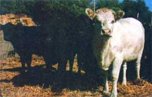
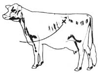
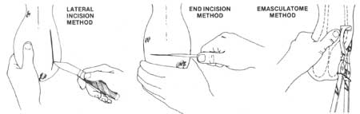

Contrary to what you may have thought, you don't need a great deal of greenery-either in the form of pastureland or money-to get started raising cattle. Not if you do it Luilla Thompson's way!
So you want to raise a small herd (maybe just two or three head) of cattle ... and enjoy honest-to-goodness "homegrown" milk, cream, butter, yogurt, cottage cheese, ice cream, and/or beef for a change? But you don't have the time, money, acreage, or know-how to start right out with several full-grown animals? Then here's a suggestion: Why not start small ... by raising bottle calves?
Ken and I acquired our very first herd this way more than ten years ago. Since then, we've ''mothered" a good many baby bovines (and learned a great deal through trial and error). And we're still convinced that the ''bottle method" is by far the easiest, most economical, most educational way to get started in small-scale dairy farming or beef raising.
Whenever possible, Ken and I buy our calves directly from the original owner, and we recommend that you do the same. Check with local dairies, which frequently sell some of their calves at birth. (An advantage of buying from a dairy is that sometimes the calf has been allowed to nurse for a few days, in which case the young'un has already gotten a good dose of the colostrum-or first milk-it needs for a good start in life.) While you're at the dairy, ask about buying some fresh colostrum too (even if they have no calves to sell you). A couple plastic jugfuls of colostrum kept at home in the freezer can come in handy later on.
You can sometimes also purchase calves at feedlots, since-frequently- cows that are brought to the lots for fattening are pregnant, and the managers of the operations don't want to bother with infants. Quite often, too, a calf born in one of these huge "meat factories" will get very little care (perhaps not even a first feeding). Hence, you may want to ask someone who works at a feedlot to notify you immediately when a calf is born.
We also buy calves now and then from the local livestock auction ... buy only if we feel we have the time, money, and extra pens to gamble with. (The sad truth is, you never really know what you're getting when you buy an animal at auction.) If you decide to go to one of the sales, try to arrive several hours before the bidding starts and don't buy any critter that you can't check close-up first.
What does a calf cost? Well, the current price for day-old calves in this area (Broadwater, Nebraska) is about $50. Calves from milker stock can still be bought at auction for about $25, however. (Last spring, I purchased eight little ones at auction for an average of $10 each. Four turned out to be "hot calves" [see below] and died the first week ... while the other four grew well and netted us a nice return in the fall.)
Before Ken and I purchase any calf, we check it over very carefully. First, we stand the animal up and run our hands over its body to check for swellings, enlarged bones, and deformities. (We also put an ear to the critter's rib cage to try to detect lung problems.)
Next, we check the baby's navel for signs of infection. Navel ill-a troublesome malady that afflicts newborns whose umbilical cords haven't been clipped (or sterilized) properly-is difficult to treat once it takes hold, since the infection spreads rapidly throughout the body. Better to discover it now than later.
Finally, we give the prospective purchase a good "once over" to see that the infant's eyes are bright and clear (no clouds or white spots), its ears are up and alert (not drooped), and its nostrils are free of any discharge. We also put the animal to the "finger test": A healthy calf will usually suck your finger. (If the youngun squirms or pulls away when you perform this-or any other test, consider it a good sign. A sick or poor-quality calf is usually overly docile.)
Calves born in feedlots should be examined very carefully before any money changes hands. Many (if not most) of the lots put their cattle on a diet high in concentrates and additives ... feed that makes the animals gain a great deal of weight very quickly, but that can leave the stomachs and intestines of unborn calves badly "burned". Such burned infants are known in the trade as hot calves.
Hot calves rarely live more than a few weeks, since they cannot absorb food. Therefore, it's imperative that you determine whether the feedlot calf you're thinking of buying is ''hot" before you commit yourself to the purchase.
Open the calf's mouth and smell its throat. If the mother was on hot feed, the odor will be sour-sweet and very strong (somewhat like rotten ensilage). Also check the animal's gums: They may be blue-tinged, or even bloody. In general, you'll find that a hot calf is listless, has droopy ears and dull eyes (eyes that may also show white "burn" spots), and prefers to lie tightly curled in a fetal position.
If the calf you're looking at displays any of the above symptoms ... save your money and move on to the next one.
You can't buy an already-stressed calf, haul it 30 miles in the back of a pickup in cold weather, and expect the animal to survive (much less thrive). Some provision must be made for keeping the baby bovine dry and warm from the time you buy it until you can get it home to a draft-free pen.
Whenever Ken and I go out to buy a calf, we always (even if it's only a little chilly) drive through an alley behind a nearby appliance store and [1] pick up a large cardboard crate (the kind that stoves and freezers come in), [2] put some straw in the box, and [3] set the container in the truck. (We also carry an old quilt with us to wrap the animal in, since calves are usually wet and/or muddy at the time of sale.) Then we're ready to tuck our new baby into a nice, comfortable, sheltered environment for the trip home.
When we arrive back -at the farm, we immediately isolate the new calf from the rest of our herd. (It's easier than you think to wipe out a large portion of an existing herd?one that you've spent a lot of time building up-by bringing in a strange calf that harbors disease germs.) Then-as an added precaution-we change our clothes and shoes before doing any chores. (A good many diseases can be carried home from an auction-or a feedlot-on the soles of boots.)
About housing: A simple threesided lean-to (measuring, say, 4' X 5') built against the side of a shed or garage will suffice to keep your baby out of the cold. Or you can build a freestanding structure. Just [1] plant four posts in the ground, [2] nail two-by-fours between the tops (and the bottoms) of the uprights, (3] fasten old boards (or what have you) to the structure's sides, and [4] cover the top with chicken wire and a layer of straw or hay (plus-maybe-an old flap of canvas that can be let down over the front during really nasty weather).
For his first few days at home, we like to make sure our new baby is dry, warm, and comfortable. That means plenty of straw or hay for bedding, and-if the weather is cold -a heat lamp for extra coziness (since the infant doesn't have its mother around to help keep it warm). And do keep the baby both warm and dry, with the emphasis on that last word. (Calves can actually withstand below-zero temperatures easily if they're dry. Wet and cold-on the other hand-are two of the surest invitations to scours I can think of.)
Once your baby is established in his new quarters, it's time to feed him. For this, you'll need a couple of calf bottles (which you can obtain at any feed store or veterinary supply house). These bottles hold two quarts each and are preferable-in my opinion- to "nipple buckets".
If the calf is only a few hours old and hasn't had its first meal with mama, you'll want to feed the critter warm (i.e., body-temperature) colostrum ... a quart of it, if he'll drink that much. Without at least one feeding of this precious fluid (which is rich in proteins, minerals, vitamins, and disease-fighting antibodies), the calf's chances of survival are greatly reduced.
In the event fresh (or frozen) colostrurn isn't available, you can concoct a satisfactory "colostrum replacer" as follows: First, mix together two eggs, a tablespoon of honey, onehalf teaspoon of powdered A, D, and E vitamins (I use Pfizer's water-soluble AD and E), and one cup of bovine milk replacer (available from the feed store). Stir this mixture into one quart of warm water and administer it in onequart quantities for the calf's first two feedings.
As soon as our new animal has had his first feeding, we give him a shot of A, D, and E vitamins to help him along. (A small bottle of liquid A, D, and E will cost you $5.00, but it'll treat many calves and will be well worth the money.) We inject 1/2-cc of the vitamins (using a small needle and syringe) intramuscularly in the fleshy part of the critter's rump. Afterwards, we follow up with a 1/2-cc shot of Combioticagain given "I.M."-either in the opposite hip or the shoulder. (Combiotic contains penicillin and dihydrostreptomycin ... antibiotics that will help stave off any infections that may have gotten started in the sale yard, on the ride home, etc.) [EDITOR'S NOTE: If you've never given an injection before, you'll do well to reader reread-Linda Martin's article, "How to Give That First Injection" , in MOTHER NO. 43, page 90a.]
After the baby's first two feedings, switch from colostrum to highquality milk replacer. The key words here are high-quality. Don't buy the cheapest milk replacer you can find, unless its contents are the same as the more expensive mixes. (Check the protein and fat content on the bag. Some replacers have a protein count of only 12-1/2%, which is much too weak. You want a protein level of at least 25%.)
Instructions for mixing bovine milk replacer come on the sack. You may want-as I do-to make the fluid a little richer for the first few weeks by putting a well-beaten egg into every two quarts of replacer. (This adds food value and makes the calf's eye and coat shine.) A little honey in the mix will help combat constipation.
How often-and how muchshould you feed your bottle baby? Some folks say to feed one quart twice a day at first. But I prefer to give our calves each one quart three times a day for their first two weeks ... then two quarts twice daily until the fourth month, by which time the young bovine should be eating mainly solid food. (See the accompanying "Feeds and Feeding" chart.)
WHAT TO FEED Birth to two weeks. Two one-quart feedings of colostrum the first day, then one quart of milk replacer three times a day. (Keep fresh water and alfalfa before the calves.) Two to eightweeks. Two quarts of milk replacer twice daily. Be gin feeding calf pellets (the best you can buy). Put salt in pen and continue to make water and alfalfa available. Eight to 12 weeks. Start mixing pellets with a ground feed made by combining ground corn, oats, and bran with a little powdered molasses. (Gradually increase the ratio of ground feed to pellets.) Feed two pounds of grain per day per calf, plus two quarts of milk replacer twice daily. Continue to offer salt, water, and alfalfa. (Good green pasture may be substituted for the alfalfa.) 12 to 16 weeks. Two quarts of milk replacer once a day. Offer access to good leafy forage or good grass. If you're raising the calf for beef, you may increase the allotment of grain (mentioned above) ... other wise-if grass is very good-the calf can graze through the summer. (In summer, our calves get just pasture grass, iodized salt, free choice minerals, and water.) Note: Excellent material on feeds and feeding is usually available free of charge through the county extension office. Check the county listings in the white pages of
Sometimes (especially if the youngster has already grown accustomed to nursing his mother) a perfectly healthy calf will refuse the bottle. I find that the easiest way to get a reluctant beastie to eat in such a case is to [1] fill the bottle with milk that's nice and warm, [2] stand astraddle the calf, holding him firmly between your knees, [3] lean forward until your chest is over its head, and [4] place the bottle in the calf's mouth. Of course, if the calf is particularly husky you'll have to watch that he doesn't throw his head up quickly and bump you in the chest. This method has, however, always worked well for me (maybe because the calf thinks he is under his mother and feels secure).
After a couple of feedings by the "overhead" method described above, you should be able to hold the bottle through the fence and feed the young'un in the normal way. (For me, the "normal way" includes lots of chatter: I always talk to our babies while I feed them. They quickly grow accustomed to my voice and seem to grow much better.)
At the end of their first week, I put fresh water out for our calves and offer them a good-quality, leafy hay or some alfalfa. Some calves won't eat much at first, but they should be offered the food anyway.
At two weeks, I begin to offer each baby calf starter pellets (available from any feed store). The calves may hesitate to eat these at first, but you can "help 'em along" by putting a few pellets in their mouths after every bottle feeding. (The sooner the calves begin to eat solid foods, the sooner you can quit messing with the bottle.)
I try to have my young'uns off the bottle by the time they're four months old. (For the last two weeks, I feed each one only one bottle a day.) From the third week on, I keep a block of salt in their pen and watch the babies carefully so that they don't eat too much of it.
As the calves grow, they'll generally do well on a diet of good hay or alfalfa, ground corn, oats, soybean meal, salt, and (always) plenty of freshwater. (See the accompanying chart.)
Fortunately, the so-called nutritional diseases of cattle are seldom fatal ... but they can cause substantial financial loss due to slow weight gain (not to mention a great deal of unhappiness on the part of your animals). Therefore, it pays to know what these diseases are and how to spot them.
Usually-if a good quality of grass, silage, or alfalfa and grain is available-a calf won't need any supplements once it has started to eat solid foods. Occasionally, though, the available grain won't have the vitamin content it should have (even the best hay will lose its food value if it's allowed to get wet or moldy, or deteriorate), and your little ones can begin to develop vitamin A and/or D deficiencies.
Vitamin A deficiency is characterized by rapid breathing, stiffness, weight loss, appetite loss, swelling of joints, and (sometimes) convulsions. The calf may begin to show improvement within minutes after a shot of A, D, and E, if the problem is acute. Occasionally, however-if the animal's been on poor-quality feed-two vitamin shots a week apart will be necessary to get the calf back on its feet. (Moral: If you suspect poor-quality hay or grain, watch for signs of vitamin A deficiency.)
Although cattle of all ages can suffer from a lack of vitamin A, younger animals are particularly susceptible (especially those that are fed skim milk rather than a highquality milk replacer). Newborn calves are the most vulnerable, since they do not have a reserve supply of the vitamin in their bodies. For this reason I give my calves a shot of A, D, and E vitamins after their first feeding. (I also add a little powdered A, D, and E to their milk or water once or twice a month, for added insurance.)
Vitamin D is required by calves for the proper absorption of calcium and phosphorus. Without it, the animals can develop rickets and/or bumpy knees. One to two pounds of sun-cured alfalfa per day, however, will prevent rickets in calves up to 195 days old ... so the deficiency isn't difficult to cure. The time to watch most sharply for vitamin D deficiency is winter, when animals don't get much direct sunlight.
If your calves start to chew on bones, rocks, wood, etc., they may not be getting enough calcium in their diets. A good way to supply calcium is to add 40 pounds of finely ground limestone to each ton of grain.
It's also possible-if a calf is fed for too long on milk without forage or grain-that the animal may become nervous and irritable and lose its appetite. In this case, the beast is probably suffering from a magnesium deficiency. (There's enough magnesium in most forage and grain to ensure that this condition seldom occurs if the calf is eating solid food.) Legumes, grass hay, soybean meal, wheat bran, and beet pulp are all rich in magnesium.
Among dietary minerals, iodine is particularly important since goiters can grow in the throat of an iodine-deficient calf and choke the animal. In some iodine-scarce areas (and that includes sections of almost all states west of the Mississippi), this mineral must be added to calves' (and people's) diets on a routine basis. Fortunately, this is easy to do: Simply buy iodized-instead of plain- salt for your animals.
Speaking of salt, calves should consume about 1/4 to 1/2 ounce of sodium chloride per animal per day. If the young'uns don't get their daily salt, they'll sometimes overeat and become ill. Always keep a block of salt where the calves can get at it easily.
One nutrition-related disease that can endanger a calf's life is, grass tetany. This malady occurs when a calf that's been confined to a small pen on rations of dry hay is suddenly turned out into a lush, green field. Among the ailment's symptoms are twitching muscles, grinding teeth, unusual excitement, nervousness, and cramps. If the disease is not caught early enough, the period of excitement can be followed by paralysis, unconsciousness, and death ... sometimes as quickly as 30 minutes after the first symptoms are noted.
Needless to say, grass tetany demands prompt treatment. Usually, intravenous administration of calcium chloride solution is recommended. (This is best handled by a veterinarian.)v None of our animals (luckily) has ever had grass tetany, but I have seen cattle in a pasture near our home die of the condition. Here-as always-an ounce of prevention is worth a pound (at least) of cure. Feed your young cattle powdered minerals free choice for several weeks before turning them out into lush pastures, and then introduce them to the rich forage gradually. Also, watch for grass tetany if fields have recently turned green after a good rain.
It goes without saying that when you acquire your first bovine bottle baby, you should check with your county agent or veterinarian to determine which vaccines (if any) are recommended for cattle in your area ... then have your young'un vaccinated. This'll take care of most of the important, life-threatening illnesses with which your calf may come in contact.
Unfortunately for the small holder, there are at least as many cattle ailments for which no vaccine exists as there are illnesses of the "immunizable" type. The following represent some of the more common "non-immunizable" illnesses that can afflict cattle of all ages.
COLDS. I find that if one of my calves gets a runny nose or shows any other signs of a cold, a scaled-up dose of common aspirin (to bring down any fever) and a shot of Combiotic will usually knock the infection right out. In addition, if the animal has the chills and is shivering, I fix him a warm toddy consisting of a quarter cup of whiskey, one ounce of lemon juice, two teaspoons of honey, and an eighth of a teaspoon of powdered A and D vitamins mixed in one cup of warm water.
LEAD POISONING. Lead kills far more farm animals than any other metal ... primarily because so many paints contain lead, and calves like to lick or chew on painted objects. The symptoms of lead poisoning include drooling, choking, trembling, and loss of appetite. A purgative dose of Epsom salts is the most common treatment. The best medicine, of course, is prevention: Simply keep your calves away from boards that've been treated with lead-based paints, and you won't have to worry about lead poisoning.
HARDWARE DISEASE. It's a fact: If nuts, bolts, nails, staples, and other small metallic objects are left around, they'll often disappear into a calf's stomach. This-in turn-gives rise to an illness known (appropriately enough) as "hardware disease", the symptoms of which include pain and a lack of appetite that's not accompanied by distension of the stomach. (In advanced cases, labored breathing is noticeable ... but at that stage of the disease, there's not much you can do.)
If hardware disease is suspected, a vet can place a magnet in the animal's reticulum (second stomach). The magnet then remains in the stomach permanently and attracts nails, staples, etc. (which gather on the magnet rather than irritating the calf's tissues).
To prevent hardware disease, keep your bovines' pens and grazing areas free of wire, nuts, bolts, screws, and other metallic objects.
PINKEYE is quite common in baby bovines and can afflict older cattle, too. While not a serious disease, pinkeye is highly contagious among cattle and does cause a great deal of discomfort. The main symptom is red, running eyes that sometimes cake shut. (In severe cases, a white blind spot may be left on the eye after the disease clears up ... which is to say, in two or three weeks.)
There are several pinkeye medications on the market. When just one of a calf's eyes is affected, you may want-in addition to applying medication to tape a patch over the afflicted eye to protect it from sunlight and (possibly) keep the disease from spreading to the entire herd.
Since flies transmit pinkeye from calf to calf, it's important to keep the barn and pens clean to hold down the fly population. We've found that a good way to catch flies is to set out shallow pans containing a piece of meat (for bait) and a nicotine sulfate solution (one-half ounce of the sulfate per gallon of water). (Naturally, we make sure these pans are out of the reach of children and animals.)
WORMS. Cattle can and do get worms, and there are numerous preparations on the market to kill the parasites. Here again, prevention (i.e., good management) is the best medicine. Feed your calves from racks or troughs (not right off the ground), give them a clean water supply, and rotate pastures often.
BLOAT. If you walk out to the calf pen one morning and find that your little bovine pal is swollen to twice his normal girth and has trouble breathing, chances are you're looking at a case of bloat. If the calf is still on its feet, you may be able to alleviate the condition by giving the animal a pint of mineral oil (make sure the oil gets into the stomach, not the lungs) or by making the calf walk around for awhile.
Many times, however, the bloated bovine will already be down on the ground with its feet sticking straight out when you first come on the scene. In this case, there's no time to lose: The calf's abdominal cavity must be punctured immediately-either with a knife or a special device called a trocar-to release the trapped gases. (Otherwise, the beast may well die from a ruptured stomach or the shutting off of air to the lungs.) This remedy is known as "tapping" or "sticking".
Point of puncture for bloat: on the left side ... equidistant from the rearmost rib, the edge of the animal's loin, and the hip bone.
When I come across a calf that's down and almost dead, I run full speed to the house, grab my paring knife (it's usually sharp and handy), pour a little alcohol or other antiseptic on it, and dash back to the calf pen to make the "tap". (A trocar is nice if you have one ... but in a life-or-death situation, a paring knife is better than nothing.) Always remember this: The point of puncture is on the left side equidistant from the rearmost rib, the edge of the animal's loin, and the hip bone. (See diagram.) Put the point of the knife on the puncture site, hold the top of the knife steady with one hand and hit the knife handle with the fist of your other hand. (Keep your face well back when you do this.) I usually leave the knife in place for a few minutes and move it slightly while I work the surrounding area with my free hand to aid the release of gas. After removing the knife, I put antiseptic ointment on the wound.
In the case of a small calf, I usually try to keep the animal's head elevated (with hay or an old pillow), to avoid having any stomach fluids escape into the lungs. If he seems weak, I'll then give the young'un a shot of Combiotic to ward off infection. I've lost count of how many calves I've stuck (many of them have belonged to other people), but so far I haven't lost any animals using this method.
Incidentally, there is such a thing as chronic bloat. Epsom salts and/or mineral oil will relieve the condition, but I don't know of any permanent cure. (I do know that chronic bloat will slow down a calf's growth.)-LT.
Scours (a kind of diarrhea) comes in a number of varieties: white, green, black, and bloody. The disorder can be brought on by any number of upsets, including exposure to wet and cold, overfeeding, contact with an infected animal, or a trip through the auction yard.
The disease begins with simple diarrhea. Unless this is stopped at once, the afflicted animal soon begins to pass yellowish, greenish, or light-brown (and in any case very foul-smelling) feces. At the same time, the calf becomes dull and listless, exhibits a below-normal body temperature (i.e., below 1010 to 103F), experiences dehydration, and may pass bloody stools. Pneumonia, and death often follow.
There are many scour remedies on the market. I have yet, however, to find one that'll work well after the disease has become at all advanced, and I have yet to find one that will nip scours in the bud as well as the "home remedy" we've used for fifteen years: Whenever I notice that a calf is passing looser-than-usual feces, I skip the next feeding of milk. In its place I feed a fluid made by mixing three tablespoons of pectin (Sure-Jell or Pen Jell) in a cup of warm water. (Although it tastes terrible, the calf will usually gulp down at least a cupful of the fluid from a bottle before it notices.)
Once the pectin finds its way to the animal's digestive tract, it causes the stomach's contents to jell and stops the cramping. (Of course, if you don't feed the solution immediately after it's prepared, the pectin will jell in the bottle instead of in the calf! )
An hour after the feeding of pectin-water, give the afflicted animal half its normal amount of milk, followed-an hour later-by another serving of pectin and water. If the condition doesn't clear up in six hours, administer a shot of Combiotic. Also, add an egg to the baby's milk at each feeding for a couple of days to give it extra strength.
Although lice are seldom a problem during the warmer months of the year, cattle of all ages can (and often do) become lousy in the fall and winter. Frequently, the parasites are carried in by birds.
Four kinds of lice bother cattle. Three suck blood and the fourth eats skin and hair. All cause itching and a slowdown in growth rates.
If your mini-herd becomes infested with lice, make up a delousing medicine by mixing 1-3/4 pounds of rotenone and one-half pound of detergent with 25 gallons of water ... then spray your animals with the liquid twice: once now and again in five to 18 days. (The first bath kills mature lice and the second gets the newly hatched parasites-or "nits" -that weren't killed by the initial spraying.) This treatment will also ward off cattle grubs.
When you purchase a calf, ask its seller whether the animal is of a horned breed or a polled (hornless) breed. If the critter is the horned type-or if you can feel horn buttons poking through the calf's scalp a few days after you've taken him home-you'll want to dehorn the little bovine as soon as possible.
The advantages of dehorning are many ... the main one being safety. Hand-raised calves aren't afraid of humans, and the tiny calf you're rearing on a bottle will-when it grows to be a 1,000-pound cow or bull-think nothing of "nudging" you for attention now and then. If your pet still has horns at that time, those gentle nudges could well be painful ... or dangerous. (I know: Several times, our bottle-raised herd bull has jolted me with his horns ... and made me realize how dumb I was to let him keep his horns when he was a little cutie.) In addition, of course, horned cattle tend to hook each other at the feeding trough, get caught on fences, etc.
The easiest way to prevent horns from appearing is to apply caustic potash (or a similar substance) to the calf's horn buttons four to 10 days after birth, or whenever you can feel horn buttons forming beneath the scalp. Caustic potash is available at drugstores in both pencil and paste forms. (CAUTION: Always wear gloves when you work with caustic potash.)
If you can feel a horn button just below the skin, scrape away the hair covering it and apply a thick layer of Vaseline to the area around the nub. Then cover the horn button itself with caustic potash. (The "burn" area should be about the size of a nickel.) Protect the animal from rain for the next six to eight hours, or until a scab has begun to form. The scab should heal completely within a week to ten days.
If you intend to raise a bull calf for beef, it'll be necessary to castrate him. (Neutered males simply "dress out" better than bulls.) Many folks wait until their bulls are two or three months old to unsex them, but if the calf is strong and healthy the operation may be performed a few days after birth. I find that two or three weeks is a good age, since the calf is still small enough for easy handling, yet large enough to withstand the stress of the operation.
The three most-used methods of castration are [1] the lateral incision method (which is what we use on our farm), [2] the end incision method, and [3] bloodless (emasculatome) castration. (Each of these methods is described in detail in G.W. Stamm's Veterinary Guide for Farmers, available for $9.95 from any good bookstore or Mother's Bookshelf (please add 950 for postage and handling when ordering by mail). Ideally, castration should be done in early spring before the fly season gets underway, to minimize the danger of fly-borne infections ... and-for your own safety-the animal being castrated should be restrained. If you've never done the operation before, have a veterinarian (or an experienced herdsman) help you the first time.
If-in the preceding pages-I've given you the impression that calf raising is an expensive and laborious undertaking fraught with pitfalls ... believe me, it's not. We've never regretted having a small herd of the young'uns around our farm: We've never felt bad, for instance, about having our own milk cow (hand-raised from the bottle stage), or our own beef in the freezer ... and the money we get every fall for the calves that we sell as yearlings ($2,100 net last year) always comes in mighty handy.
I suppose if I had just two words of advice to give to someone who hasn't yet raised a bottle calf, they'd be: First, try to get as good a calf as you can find (or afford) in the beginning. (Later on, you can try your hand at raising a so-called "bargain" calf.) Second, don't wait any longer ... do it. You have nothing (except a little time) to lose ... and a good deal of milk, cream, butter, yogurt, cheese, beef, extra income, and satisfaction to gain!
For more information on calf rearing, be sure to read Hank Rate's article-"The One-Cow Family Meets the One-Family Cow"-in MOTHER NO. 15, pages 48-56, and "How to Raise a Dairy Calf" by J. Micheal Thompson in MOTHER NO. 33, pages 60-61.-The Editors.
|
 |
 |
 |